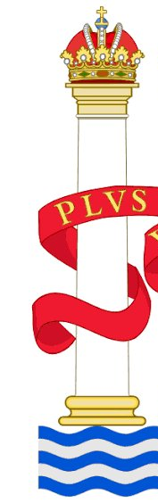
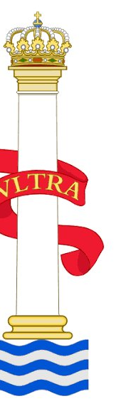

Cargando el Imperio
.
.
.

IMPERIO
ESPAÑOL

⚏
Virreinatos
todos
▾
Filtrar por región
Capas Adicionales
Rutas de Expedición
…
Capitales Virreinales
5
Universidades
…
Hospitales
…
Ciudades fundadas
…
Hitos y Rutas Históricas
🚢
Ruta del Galeón de Manila
Acapulco ⇆ Manila — Tornaviaje por Japón
🏛️
Columnas de Hércules
Estrecho de Gibraltar — PLVS VLTRA
✕ Cerrar evento
⚏ Menú
· filtrar virreinatos
Capas
· activar/desactivar
Arrastrar
· rotar ·
Rueda
· zoom
Clic
· ver info
×